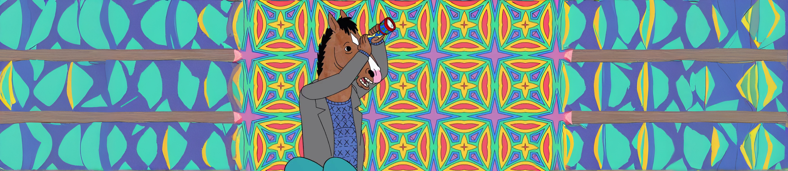
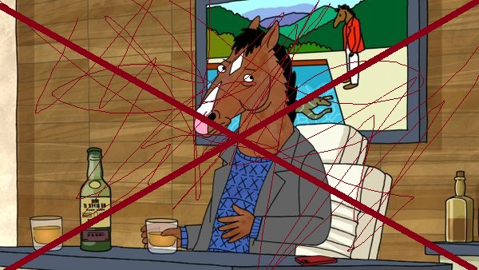
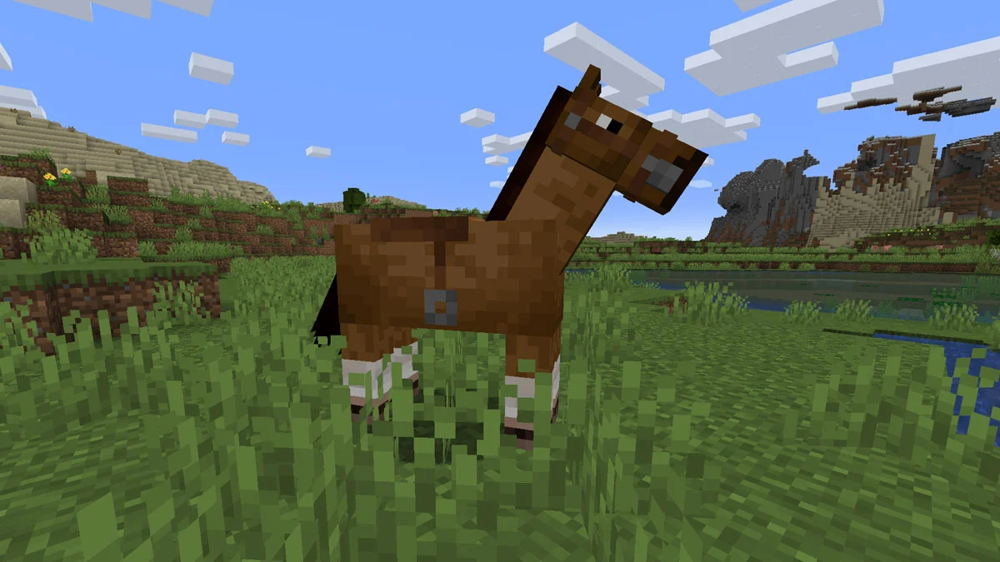
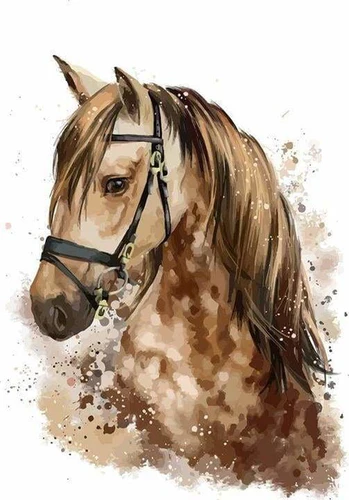

Actualité
Les dernières nouvelles sur la série de Bojack Horseman...

Avis : il n'y a pas de saison 7 de BoJack Horseman

Un jeu vidéo sur Bojack est en développement

Une exposition d'art sur Bojack à Los Angeles
Personnages
Découvrez les acteurs et de l'équipe de Bojack...
Photos et vidéos
Découvrez des photos et vidéos exclusives de Bojack...